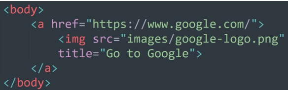

A hyperlink or link is a word, phrase, or image that a user can click on to jump to a new document or a new section within the current document. Links are found in nearly all web pages. Links allow users to click their way from page to page.
Links are defined with the <a> and </a> tags. The <href> attribute is used to specify the destination address of the link.
The <href> (hypertext reference) attribute provides the address of the page or resource (its URL) to the browser. The URL must always appear in quotation marks.
There are two ways to specify the URL:


By default, links will appear as follows in all browsers:
A pseudo-class is used to define a special state of an element:
The <target> attribute specifies where to open the link document:
_blank – opens the link document in a new window or tab._self – opens the link in the same window/tab as it was clicked (default).Images can also be used as links. Just put the <img> element inside the <a> and </a> tags.
The <title> attribute specifies extra information about an element. The information is most often shown as a tooltip text when the mouse moves over the element.
HTML bookmarks are used to allow readers to jump to specific parts of a web page. Bookmarks can be useful if a web page is very long. Linking to a specific point in the page is also known as linking to a document fragment.
To create a destination, use the #id attribute to give the target element in the document a unique name. In web lingo, this is the fragment identifier.
IDs are called by adding the pound (#) symbol to the ID name.
Enhance the look and functionality of your website by styling your HTML lists into a sleek horizontal or navigation menu. With a few CSS declarations, your website can become more user-friendly and visually appealing.
The padding element is used to create space around an element’s content, inside of any defined borders.
Use the mailto: protocol to direct the link to an email address. The browser opens a new mail message preaddressed to the designated mail program (Outlook, Gmail, or Thunderbird).